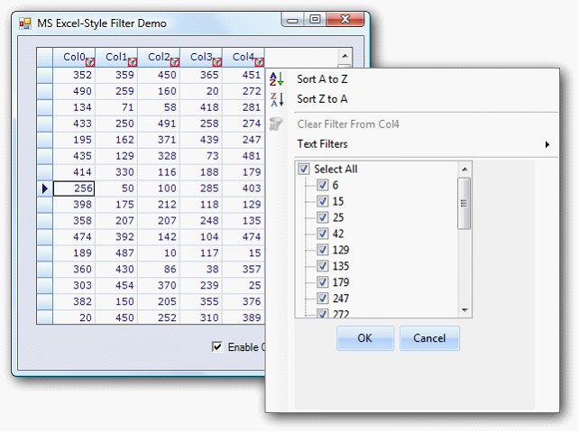

Essential Grid now provides an inbuilt Excel like filter as in Microsoft Excel 2007 from the class GridOffice2007Filter, with which the grid has to be wired.
Enabling Excel like filter
Set Allow filter to true when Grid Control is wired with the GridOffice2007Filter to enable Excel like filter to the Grid filter bar.
The following code illustrates how to add Excel Like Filter to the Grid filter bar.
|
[C#]
GridOffice2007Filter filter; private void showFilter_CheckedChanged(object sender, EventArgs e) { this.gridGroupingControl1.TableDescriptor.Columns[0].AllowFilter = true; if (this.showFilter.Checked) { filter.WireGrid(this.gridGroupingControl1); } else { filter.UnWireGrid(this.gridGroupingControl1); } } |
|
[VB]
Private filter As GridOffice2007Filter Private Sub showFilter_CheckedChanged(ByVal sender As Object, ByVal e As EventArgs) Me.gridGroupingControl1.TableDescriptor.Columns(0).AllowFilter = True If Me.showFilter.Checked Then filter.WireGrid(Me.gridGroupingControl1) Else filter.UnWireGrid(Me.gridGroupingControl1) End If End Sub |
 Note: The GridOffice2007Filter can unwired from
the grid to disable the Excel like filter.
Note: The GridOffice2007Filter can unwired from
the grid to disable the Excel like filter.
Specifying Value To Filter
The feature has multiple selections of values to filter.
You can specify the value the column has to filter in the check box in the tree view inside the drop down container.

Figure 482: Filter Bar Drop Down
 Optimized Office2007Filter in
GGC
Optimized Office2007Filter in
GGC